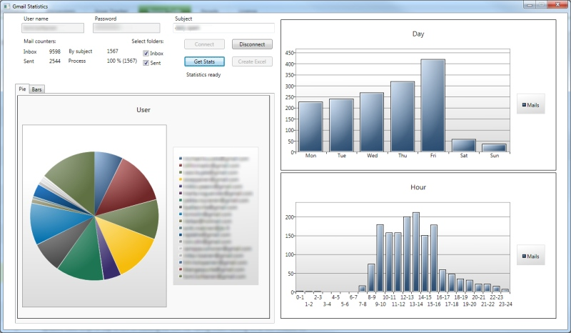
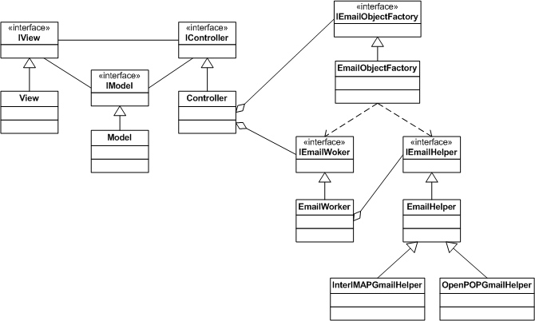
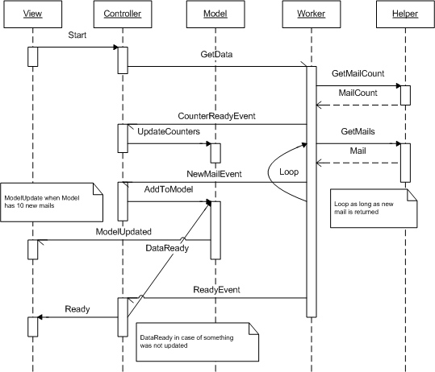

Email Statistics
Source: GitHub

Create statistics of received / sent mails.
Select emails by subject query.
WPF UI and DataVisialization Toolkit Charts.
Now supports only Gmail folder structure.
Uses IMAP protocol. (enable gmail imap)
Application is slow, but that's mainly thanks to IMAP :)
Updates statistics on real time.
UML Class Diagram:

Model-View-Controller archietcture and view is on own project, so it's easy to change.
Source includes also some Unit Tests.
GetData Sequence Diagram:
